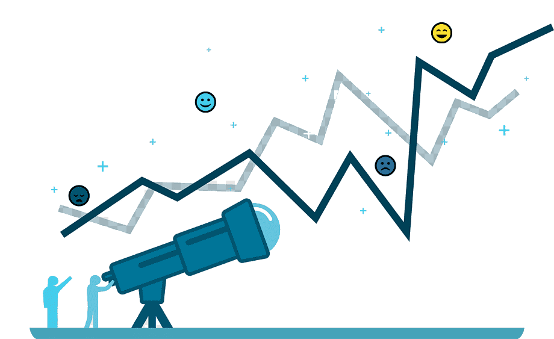
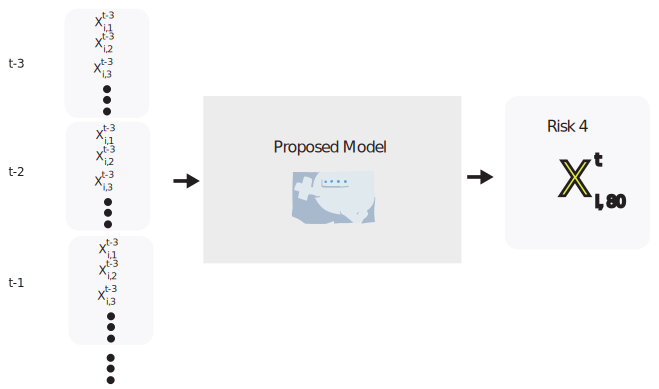
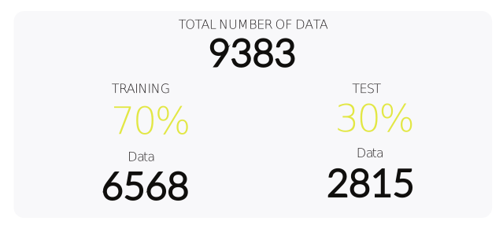
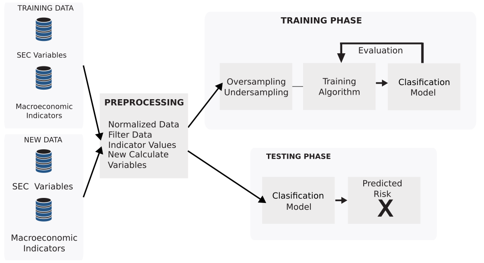

Risk Automatic Prediction for Social Economy Companies using Camels
Joseph A. Gallego-Mejia / Daniela Martin-Vega / Fabio González
jagallegom@unal.edu.co / dmartinv@correo.udistrital.edu.co / fagonzalezo@unal.edu.co
MindLab – Bogota, Colombia
Risk Automatic Prediction
- Predict the risk of bankruptcy of a Social Economy Enterprise (SEC).
Risk Automatic Prediction
- Predict the risk of bankruptcy of a Social Economy Enterprise (SEC).
- Inspect every SEC is not possible.
Risk Automatic Prediction
- Predict the risk of bankruptcy of a Social Economy Enterprise (SEC).
- Inspect every SEC is not possible.
- Supervise each SEC is a time consuming task.
Risk Automatic Prediction

- Predict the risk of bankruptcy of a Social Economy Enterprise (SEC).
- Inspect every SEC is not possible.
- Supervise each SEC is a time consuming task.
- How to automatically evaluate the risk of each SEC?
Risk Automatic Prediction
The components of CAMELS are:
- (C)apital adequacy
- (A)ssets
- (M)anagement capability
- (E)arnings
- (L)iquidity
- (S)ensitivity
Risk Automatic Prediction
The components of CAMELS are:
- A scale of 1 implies that a bank exhibits a robust performance, is sound, and complies with risk management practices.
- A scale of 2 means that an institution is financially sound with moderate weaknesses present.
- A scale of 3 suggests that the institution shows a supervisory concern in several dimensions.
- A scale of 4 indicates that an institution has unsound practices, thus is unsafe due to serious financial problems.
- A rating of 5 shows that an institution is fundamentally unsound with inadequate risk management practices.
Risk Automatic Prediction
The problems with CAMELS computation:
- We do not have the estimation until the company send the information to review
- We can not predict what would be the CAMELS value of a company in the next period
Enterprise Properties Variables
- Type of organization
- Whether it is a cooperative, fund or other type of organization.
- Type of company: Multi-active, employee funds.
- Type of supervision: 1,2,3.
- Group Niif of the organization Department of the organization
- Municipality of the organization
- Category of the organization
- Number of associates
- Number of employees
- Number of offices
- Number of correspondents
- Number of savers
- Number of debtors
- Total assets of the organization
Risk and Camels Variables
- Consolidated risk rating
- Risk rating
- Camel rating
- Credit risk
- Liquidity risk
- Operational Risk
- Sarassoft risk
Variational Variables
- Variation between two consecutive periods of associates
- Variation between two consecutive periods of employees
- Change between two consecutive periods in the number of offices
- Change in the number of savers between two consecutive periods
- Variation between two consecutive periods in the number of debtors.
- Change between two consecutive periods in total assets
- Variation between two consecutive periods of gross portfolio
- Variation between two consecutive periods of the consumer portfolio
- Variation between two consecutive periods of the housing portfolio
Bankruptcy Risk Model

Experimental Setup: Dataset

Final Proposed Model

Accuracy Results
\[
\begin{array}[c]{|c|c|c|c|c|}
\hline
Model & Random & Neural & SVM & Logist \\
&Forest & Networks & & Regression\\
\hline
\text{Chart of account (CA)} & \bf{72\%} & 69.3\% & 70.1\% & 65.5\% \\
\text{Descriptive variables (DV)} & & & & \\
\text{CA + DV} & \bf{70.95\%} & 68.3\% & 68.2\% & 63.5\%\\
\text{Variation between periods (VBP)} & & & & \\
\text{CA + DV + VBP} + & \bf{76.66\%} & 75.5\% & 74.5\% & 70.3\%\\
\text{CAMELS/RISK + MI} & & & & \\
\hline
\end{array}
\]
Confusion Matrix Results
\[
\begin{array}{|c|c|c|c|c|c|}
\hline
& \textbf{1} & \textbf{2} & \textbf{3} & \textbf{4} & \textbf{5} \\ \hline
\textbf{1} & \textbf{14%} & 79\% & 7\% & & \\ \hline
\textbf{2} & & \textbf{80%} & 20\% & & \\ \hline
\textbf{3} & & 33\% & \textbf{67%} & 1\% & \\ \hline
\textbf{4} & & 7\% & 84\% & \textbf{9%} & \\ \hline
\textbf{5} & & 100\% & & & \textbf{0%} \\ \hline
\end{array}\]
Conclusions
- A machine learning model is proposed to assess risk
Conclusions
- A machine learning model is proposed to assess risk
- The use of inter-period variations improves the accuracy of the model
Conclusions
- A machine learning model is proposed to assess risk
- The use of inter-period variations improves the accuracy of the model
- The addition of macroeconomic variables improves the accuracy and recall of the model
Conclusions
- A machine learning model is proposed to assess risk
- The use of inter-period variations improves the accuracy of the model
- The addition of macroeconomic variables improves the accuracy and recall of the model
- Oversampling and undersampling is a neccesary step